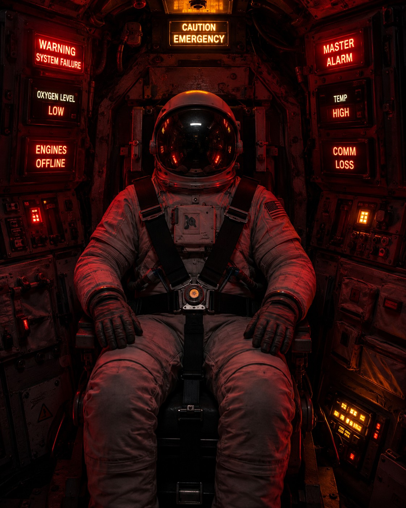
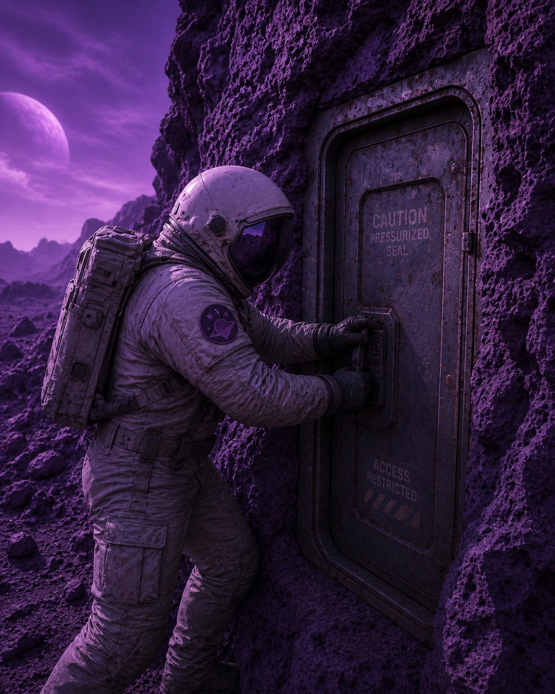

I am, for better or worse, something of an empath. I read a room before I've finished walking into it. If you are upset, I will know before you've said a word about it. And the strange part isn't the noticing — it's the keeping. Someone can have a hard moment with me, move on, and forget it within the hour. I will carry it for days.
So it's a little absurd, in hindsight, that I sat down to write a protagonist who feels almost nothing at all.
Shaden Stewart is a man who logs a planetary storm system the way someone else might log a grocery list. He names a herd of six-legged alien creatures within minutes of seeing them, because naming is a task, and tasks are comfortable. He eats a meal he isn't sure he enjoyed, and notes that fact into his recorder with the same flat tone he uses for soil composition. Alarms blare warnings that he could die in the next ten minutes, and he listens to them, in my own description of him, the way someone listens to rain on a roof.
I wrote that line myself. I have never once in my life been able to listen to anything that calmly.
Borrowing a Numbness I've Never Had
Here is the actual difficulty, and it is not a craft problem in the way pacing or plot structure are craft problems. It is something closer to an impersonation I have to keep performing, sentence by sentence, for an entire novel. I have to imagine what it would be like to watch a predator circle on the horizon and not let my pulse change. I have to imagine setting a communications beacon during an oncoming lightning storm and noting, calmly, that I have twenty-nine minutes, the way Shaden does, rather than what I would actually be doing in that moment, which is spiraling.
Every page of Shaden is a page where I have to actively suppress the instinct that runs my entire life. I read the emotional temperature of a room for a living, basically — friends, students, strangers on a train. Writing Shaden means writing a man who either can't read that temperature or refuses to, and doing it convincingly enough that the reader believes he isn't just suppressing something, the way I would be. He genuinely doesn't have the word for it yet.
The Door That Breaks Him

There's a sequence later in the manuscript, after Shaden has used a breakpak charge to blow a sealed door off its track and made his way down through a lift into a buried chamber lit by glowing fungus. Along one wall there's a series of murals, painted by a civilization that doesn't exist anymore, showing their world the way it used to be — green, populated, alive — and then showing, mural by mural, what happened to it. A dying sun. An evacuation. A planet emptied out and left purple and frozen, which is the very planet Shaden is now standing on.

He stands in front of the final mural, the one showing the world at its peak, right before everything started going wrong, and I wrote this line: Shaden stood and began to feel feelings he had no name for.
That sentence took me a long time to be willing to write, because it's the first time in the book Shaden admits, even to himself, that something is happening to him that his training never prepared him for. And I had to sit with what that would actually feel like for a man who has never had to name a feeling in his life — not relief, not grief, not even hunger beyond "I should eat now." I had to imagine the feeling arriving in him as something foreign. A visitor. Something he has no internal vocabulary to process, because for me, vocabulary for feeling has never been the problem. I have always had too much of it. I have whole rooms of it I didn't ask for.
What I Keep Learning From Him
I won't pretend I've solved this. Every chapter, I have to talk myself back down into Shaden's register — flat, procedural, observational — and away from my own, which wants to narrate everything, including a man's interior collapse, with far too much feeling. The instinct to write what I would feel, rather than what he would, is constant. I delete a lot of sentences that are too warm for him. I have to keep reminding myself that his silence is the character, not a withholding from me as the author.
But there is something I didn't expect going into this book, which is that writing a man who can't feel has made me think harder about what I do with all the feeling I carry. Shaden doesn't have the luxury of holding someone else's bad day for a week after they've forgotten it. I'm not sure, some days, that it's a luxury at all. Writing him hasn't made me want to be more like him. If anything it's made me grateful, in a complicated way, that I'm not.
Still. I understand him a little better with every chapter. And I think that understanding is going to matter a great deal by the time he reaches the end of this book.
—Charles